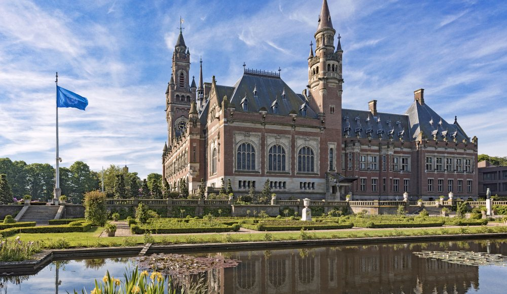

Den Haag
Weetjes
- Den Haag maar liefst 11 kilometer kust heeft?
- Er meer dan 180 verschillende nationaliteiten in Den Haag wonen?
- De inwoners twee namen hebben; Hagenaar of Hagenees?
- Den Haag meer dan 115 hofjes heeft?
- De eerste tennisbaan van Nederland in Den Haag was?
Het Vredespaleis
 Het Vredespaleis in Den Haag is ook wel het Internationaal Gerechtshof van de Verenidgde Naties en de Haagse Academie voor Internationaal Recht. Wat houdt dit in? Landen die een conflict met elkaar hebben, komen naar het Vredespaleis voor een gerechtelijke uitspraak. Dit gebouw staat, zoals de naam al doet suggereren, symbool voor vrede en gerechtigheid.
Madurodam
 Wil je ondervinden hoe het is om een reus te zijn? Kom dan naar Madurodam!
Een plaats waar zelfs de kleinsten zich groots zullen voelen.
Beleef Nederland en zijn bezienswaardigheden nu in het klein.
Zoveel van ons land heeft u nog nooit gezien.
Wil je ondervinden hoe het is om een reus te zijn? Kom dan naar Madurodam!
Een plaats waar zelfs de kleinsten zich groots zullen voelen.
Beleef Nederland en zijn bezienswaardigheden nu in het klein.
Zoveel van ons land heeft u nog nooit gezien.